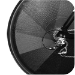

Want to train with a friend or partner? Share the cost of a single session fee.
This initial hour will be spent with Tatum where she will assess your fitness
profile; go through with you your fitness goals and aspirations and any fears you may have and she will
take the time to look at your body biomechanics ensuring she can devise a programme unique to you.
More specialised services...
Run Analysis
In the present day, most gym and personal training facilities offer some kind of biomechanical running analysis, using an array of complex computers, scanners and video. But do they actually achieve what they are there for?
Tatum learnt the hard way that they often do not guarantee a result that will have you running more efficiently
and effectively. Tatum draws on her 20 years experience at the athletics track, and the knowledge she has gathered
from some of the best physiotherapists and analysts from around the world to give you straight-to-the-point advice
about running technique, shoes and biomechanics
Over a series of sessions Tatum will change the way you run, forever, for the better

Triathlon Conditioning
“A body that is prepared and conditioned for your sport is a body that will achieve”
During recent years Tatum has developed a passion for helping the triathlete supersede their expectation by
aiding their training process.
Most triathletes are meticulous with their running, cycling and swimming regimes but more often than not
will pick up an illness or injury at a crucial point in their pre-season preparation.
After continually watching triathletes put in the miles and train to their limit, it is clear something
is missing and changes have to be made. By conditioning the body the right way, we can ensure that you can
keep progressing in both competition and training and get the maximum out of your performance.
With proven success in working with triathletes Tatum Nelson Fitness will create a programme that
will enhance your training, allowing you to not only improve in competition but to train with confidence
Sports Specific Conditioning
Programmes include:
Whatever your discipline, Tatum can offer sport specific conditioning to improve your performance.
By discussing your objectives, and testing for your strengths and weaknesses, Tatum will build a
highly specific programme so that you can go further, go faster, and hit harder

Event Preparation Plans
Providing preparation for events ranging from 5km and 10km runs to cycling sportives, at Tatum Nelson Fitness, we can structure a 6, 8, or even 12 week plan purely for that single event.
There is nothing like standing on the start line knowing that you are 100% prepared. With a specific plan the guesswork can be eliminated and you can ensure that everything in the training leading up to the event is tailored for your goal.